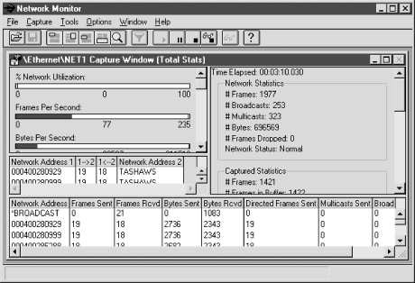

8.6. Microsoft Windows
Apart from
the basic text-based tools such as
netstat,
Microsoft doesn't really include many useful utilities with the
consumer versions of Windows. But if you are using Windows NT or
Windows 2000, you have more options. The
netmon
tool is included with the server versions. A brief description of how
this tool can be used to capture traffic was included in
Chapter 5, "Packet Capture".
netmon can also be used
to capture basic traffic information.
Figure 8-9 shows
netmon's
basic capture screen. The upper-left pane shows five basic graphs for
real-time traffic -- network utilization, frames per second, bytes
per second, broadcasts per second, and multicasts per second. The
second pane on the left lists current connections between this and
other hosts. The details of these connections are provided in the
bottom pane. The pane on the right gives overall network statistics.
To use
netmon in this fashion, just start the
program and select Capture

Start. In standalone mode,
netmon functions as a point-monitoring tool, but
as noted in
Chapter 5, "Packet Capture", it can be used with agents
to collect traffic throughout the network.

Figure 8-9. netmon traffic monitoring
For general systems monitoring,
perfmon (Performance Monitor) is a better
choice. It is also supplied with both the workstation and server
versions.
perfmon is a general
performance-monitoring tool, not just a network-monitoring tool. You
can use it to measure system performance (including CPU utilization)
and I/O performance, as well as basic network performance. If
appropriately configured, it will also monitor remote machines.
Data
collected is organized by object type, e.g., groups of counters. For
example, with the UDP object, there are counters for the number of
datagrams sent per second, datagrams received per second, datagrams
received errors, etc. For network monitoring, the most interesting
objects include ICMP, IP, Network Interface, RAS Ports, RAS Total,
TCP, and UDP.
perfmon
provides four views -- alert, chart, log, and report. With alert
view you can set a threshold and be notified when a counter exceeds
or drops below it. Chart view gives a real-time graph for selected
counters. You can customize the sampling rate and scale. Log view
logs all the counters for an object to a file periodically. Finally,
report view displays numerical values in a window for selected
counters. Each view is independent of the others.
Figure 8-10 shows the process of adding a monitored object
to the chart view for the Windows NT version.
Figure 8-10. Windows NT perfmon
The Windows 2000 version has received a slight face-lift but seems to
be the same basic program.
perfmon can be
particularly useful if you aren't sure whether you have a host
problem or a network problem. Both
netmon and
perfmon are described in the Windows help files
as well as several books described in
Appendix B, "Resources and References".
8.6.1. ntop, mrtg, and cricket on Windows
All
three major packages described in this
chapter --
ntop,
mrtg,
and
cricket -- are available for Windows
systems.
The developers of
ntop have provided you with
two choices. You can compile it yourself for free. Both the Unix and
Windows versions share the same source tree. Or, if you can't
easily compile it, you can buy a precompiled binary directly from
them. Since
ntop is basically a point-monitoring
tool, you'll likely want to run it on multiple machines if you
have a switched network or multiple subnetworks.
Since
mrtg and
cricket are primarily written in Perl, it is not
surprising that they will run under Windows. You'll find
mrtg fairly straightforward to set up. While
cricket is said to work, at the time this was
written there were no published directions on how to set it up, and
the Unix directions don't generalize well.
Setting up
mrtg for
Windows is not that different from setting it up under Unix. To get
mrtg running, you'll need to download a
copy of
mrtg with the binary for
rateup. This was included with the copy of
mrtg I downloaded, but the
mrtg web page for NT has a separate link should
you need it. You will need a copy of Perl along with anything else
you may need to get Perl running. The
mrtg site
has links to the Active Perl site. Installing Active Perl requires an
updated version of the Windows Installer, available at their site.
You'll need to provide some mechanism for running
mrtg on a regular basis. The file
fiveminute.zip provided a program to add
mrtg to the Windows NT scheduler. Finally,
you'll want to provide some mechanism to view the output from
mrtg. This could be a web server or, at a
minimum, a web browser.
Once you have unpacked everything, you'll need to edit the
mrtg script so that NT rather than Unix is the
operating system. This amounts to commenting out the fourth line of
the script and uncommenting the fifth:
#$main::OS = 'UNIX';
$main::OS = 'NT';
Also, make sure
rateup is in the same directory
as
mrtg.
Creating the configuration file and
running the script is basically the same as with the Unix version.
You'll want to run
cfgmaker and
indexmaker. And, as with the Unix version,
you'll need to edit the configuration file to set
WorkDir :. You will need to invoke Perl
explicitly and use explicit paths with these scripts. For example,
here are the commands to run
indexmaker and
mrtg on my system:
D:\mrtg\run>perl d:\mrtg\run\indexmaker d:\mrtg\run\mrtg.cfg > d:\apache\htdocs\mrtg
D:\mrtg\run>perl d:\mrtg\run\mrtg d:\mrtg\run\mrtg.cfg
On my system,
D:\mrtg\run is the directory where
mrtg is installed and
D:\apache\htdocs\mrtg is where the output is put
so it can be accessed by the web server.
Finally, you'll need to make some provision to run
mrtg periodically. As noted, you can use
supplied code to add it to the scheduler. Alternately, you can edit
the configuration file to have it run as a daemon. For example, you
could add the following to your configuration file:
RunAsDaemon: yes
Interval: 5
You'll want to add
mrtg to the startup
group so that it will be run automatically each time the system is
rebooted.
8.6.2. getif revisited
In
Chapter 7, "Device Monitoring with SNMP", we
introduced
getif but did not discuss the graph
tab. Basically, the graph tab provides for two types of
graphs -- graphs of ping round-trip delays and graphs of SNMP
objects. The latter allows us to use
getif as a
traffic-monitoring tool.
Graphing SNMP objects is a three-step
process. First, you'll need to go back to the Parameters tab
and identify the remote system and set its SNMP community strings.
Next, you'll need to visit the MBrowser tab and select the
objects you want to graph. Locate the objects of interest by working
your way down the MIB tree in the large pane on the upper left of the
window. Visit the object by clicking the Walk button. The object and
its value should be added to the large lower pane. Finally, select
the item from the large pane and click on the Add to Graph button.
(Both of these tabs were described in
Chapter 7, "Device Monitoring with SNMP".)
You can now go to the Graph tab. Each of the selected variables
should have been added to the legend to the right of the chart. You
can begin collecting data by clicking on the Start button.
Figure 8-11 shows one such graph.
Figure 8-11. getif graph
The controls along the bottom of the page provide some control over
the appearance of the chart and over the sampling rate.
 |  |  |
| 8.5. RMON |  | 9. Testing Connectivity Protocols |